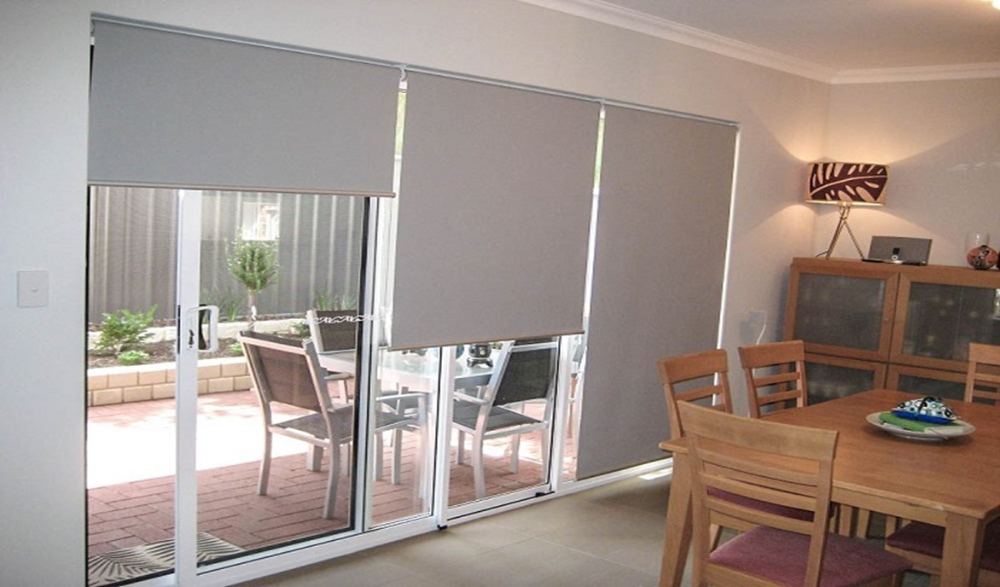
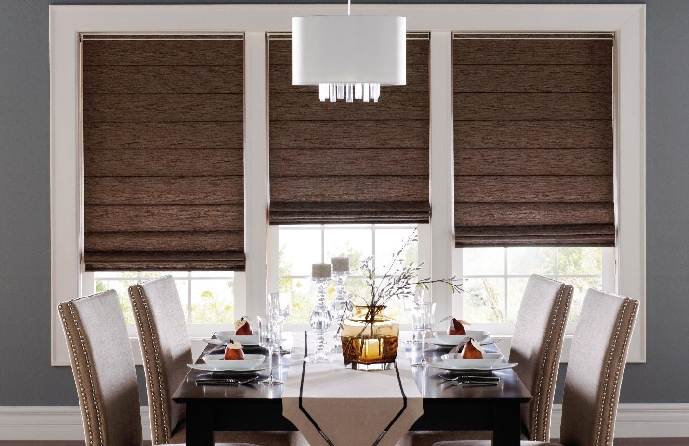

Những loại rèm được những người đàn ông của gia đình lựa chọn để
trang trí cho tổ ấm của họ
-
Rèm cầu vồng : là dòng rèm cuốn nhưng có thiết kế tối ưu hơn cả.
Chúng có cấu tạo 2 lớp, một lớp vải và một lớp lưới. Nhờ cấu tạo
đan xem giữa 2 lớp đặc biệt này mà người dùng có thể dễ dàng điều
chỉnh ánh sáng theo ý mình. Lớp vải với lớp vải tổng hợp polyeste
cho khả năng chắn sáng lên đến 90-100%, lớp lưới với các lỗ lưới
được nghiên cứu để ngăn chặn côn trùng nhưng vẫn che chắn hiệu
quả.
-
Rèm cuốn : được tạo nên từ những thanh cuộn rèm và tấm vải tổng hợp polyeste nên dễ dàng trong việc điều chỉnh ánh sáng một cách dễ dàng bởi bạn có thể cuộn lên cao hoặc kéo dài xuống thấp.

-
Rèm Roman : Thiết kế hoàn hảo, ống cuộn và đầu kéo được ẩn hoàn toàn bên trong hộp rèm, cho bạn cảm nhận sự tuyệt vời nhất. Với kết cấu tối ưu hóa khoảng cách giữa hai lớp vải 100 % polyeste, rèm Roman cho độ che sáng hoàn hảo nhất.
